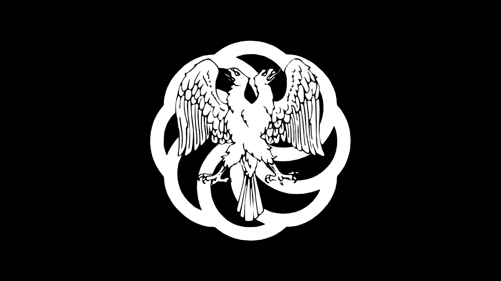

DISTANT WORLDS
 Stellar Neighborhood
Stellar Neighborhood

 Name: Settled Exoplanets Alliance | SEA
Name: Settled Exoplanets Alliance | SEA
Star System(s): Kepler-1649, Barnard's Star (Formerly), Kentara (Failed)
 Planet(s): Novrutara, Vishapakar (Formerly), Dyson Terra (Presence), Tau Ceti E (Presence)
Planet(s): Novrutara, Vishapakar (Formerly), Dyson Terra (Presence), Tau Ceti E (Presence)
Description:
The Settled Exoplanets Alliance (S.E.A) emerged as a rebellious force against the United LunaTerra and the Martian Technate, opposing the governance of exosolar systems by the Solar System's political powers. Seeking to establish independent systems, they executed a successful siege of Earth's L5 Station using the stolen Kepler-Class Interstellar Cruiser "Winged Voyager." Afterward, they fled to the Kepler-1649 system, settling on Planet 2, which they named Novrutara—meaning "New Home" in Saturnian slang.
Several former governates of United LunaTerra and the Martian Technate declared independence in alignment with the S.E.A. Notably, Barnard’s Star, a militaristic dictatorship with a flourishing agricultural economy, joined the cause. However, the S.E.A.'s attempt to sabotage the governor elections on Dyson Terra in the Ross 128 system provoked an immediate and lethal response from the Solar System powers. Seizing the opportunity to reclaim Barnard’s Star, the Martian Technate initiated the "Siege of Barnarda" to eradicate the S.E.A.'s presence from both Vishapakar and Barnard’s Star.
Despite their animosity towards the Solar System, the Cetus Federal Republic offered to preserve Vishapakar’s independence by extraditing those responsible for the governor's assassination on Dyson Terra, attempting to broker peace and stability amidst the turmoil.